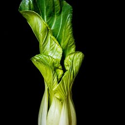
Bok choyNOURISHDAY · FOOD CALENDAR
Snap a meal.
Nourish your day.
One photo at a time, your meals become a calendar.
Start with a food photo, review what you ate, and save the meal. Weather, solar terms, and practical food knowledge help you see the rhythm behind your everyday choices.
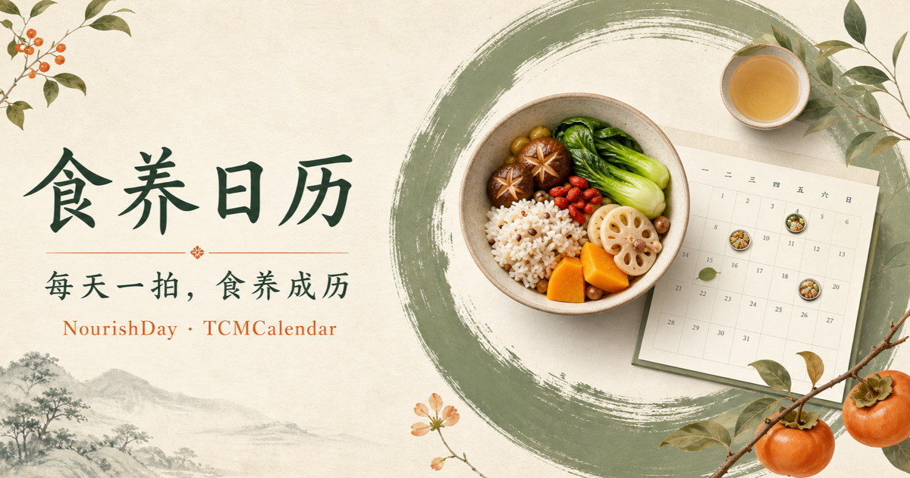
ONE PHOTO A DAY
Your everyday meals
deserve to be remembered.
Meal logging is not about eating perfectly. It gives each day a place in your story, so small choices gradually become a food calendar that is truly yours.
AUGUSTAugust · Meal journal
6 meals logged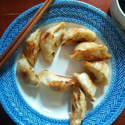
Dumplings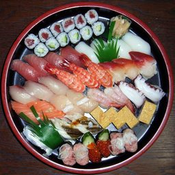
Sushi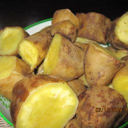
Sweet potato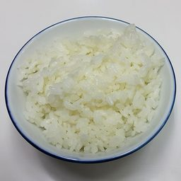
Rice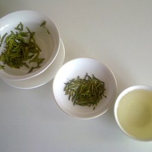
Green teaMORE THAN A CALORIE TRACKER
Understand your days,
not just the numbers.
One photo, one mindful meal
Log a meal with one photo
Scan a meal, menu, or receipt. NourishDay suggests foods first, then you confirm the items and portions before anything is saved.
Take a photo→Confirm foods→Save to calendar
Turn nutrition into a calendar
See nutrition over time
Review meals and nutrition by day, turning individual choices into a clear and sustainable record of how you eat.
Protein 78%Fiber 64%Water 82%
Live with the seasons
Follow the rhythm of the seasons
Connect weather, air quality, the lunar calendar, and the 24 solar terms with practical food, tea, and lifestyle references.
秋Start of Autumn
A bilingual wellness library
Explore food knowledge in two languages
Search across 470 entries spanning ingredients, prepared dishes, herbs, teas, and everyday wellness references.
IngredientsDishesHerbsTeas
Your daily nutrition, at a glance
Check today's nutrition on your wrist
Apple Watch keeps a recent seven-day summary close at hand, including meal count, intake, and the nutrients you choose to follow.
78%Protein
64%Carbs
82%Calories
Small steps, lasting habits
Turn consistency into visible progress
Meal logs, active-day streaks, and library exploration build toward milestones that make long-term habits easier to see.
First mealSeven-day streakLibrary explorer
BUILT FOR YOUR DAILY RHYTHM
Start with today's meal.
See the rhythm of daily life.
Check the weather and seasonal context in the morning, photograph lunch, and review nutrition and progress in the evening. Small actions can become a sustainable routine.
- TodayWeather, lunar calendar, solar terms, and daily guidance
- ScanRecognize, review, and save meal nutrition
- CalendarLook back across seasons and daily records
- LibrarySearch ingredients, dishes, herbs, and teas

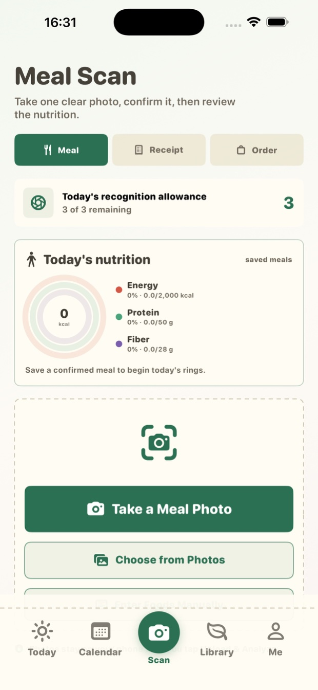
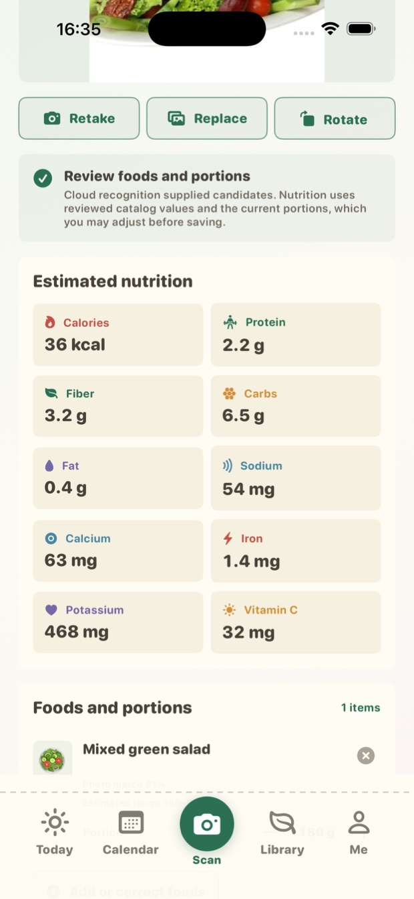
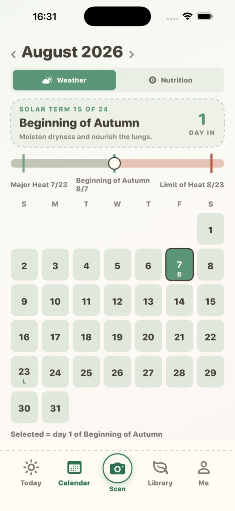

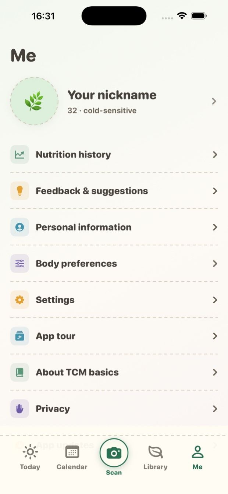
DESIGNED FOR TRUST
AI suggests.
You decide.
You choose when to upload
A meal image is used for recognition only after you actively select it and confirm the upload.
You review every result
Suggested foods and portions remain editable. A model result is never written directly into your journal.
Nutrition comes from a reviewed catalog
After you confirm a food, NourishDay maps it to catalog nutrition data for a record you can revisit.
QUESTIONS & ANSWERS
About NourishDay
What are NourishDay, 食养日历, and TCMCalendar?＋
食养日历 is the Simplified Chinese name for NourishDay, while TCMCalendar is an earlier technical project name. They refer to the same app and the same core experience: connecting everyday meals with nutrition, seasonal context, and food knowledge.
How reliable are nutrition estimates from photos?＋
Image recognition supplies food candidates only. You review or edit the foods and portions first; nutrition is then calculated from the reviewed food catalog instead of treating a model guess as a final answer.
Does NourishDay provide medical diagnosis or treatment advice?＋
No. Seasonal, food, and lifestyle content is provided for health education and everyday reference only. It does not replace diagnosis, treatment, or individualized advice from a qualified professional.
Can I use NourishDay on Apple Watch?＋
Yes. Once paired, Apple Watch can show a recent seven-day meal and nutrition summary, including the latest valid data while temporarily offline.
Does NourishDay support Simplified Chinese?＋
Yes. NourishDay supports English and Simplified Chinese across the calendar, library, nutrition, account, and Apple Watch experiences. Use “中文” at the top of this page to view the Chinese site.
START WITH TODAY
Today's meal can be
the first page of your calendar.
NourishDay · Food Calendar
每天一拍，食养成历。